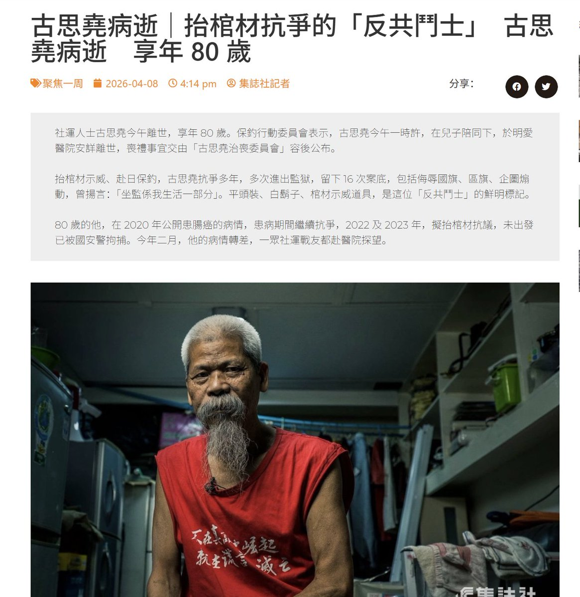
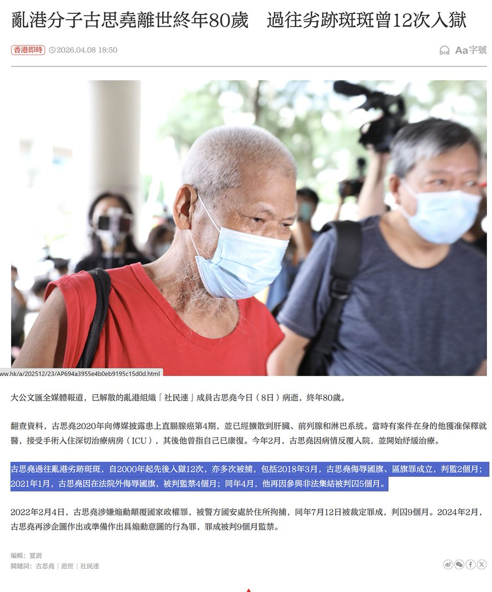
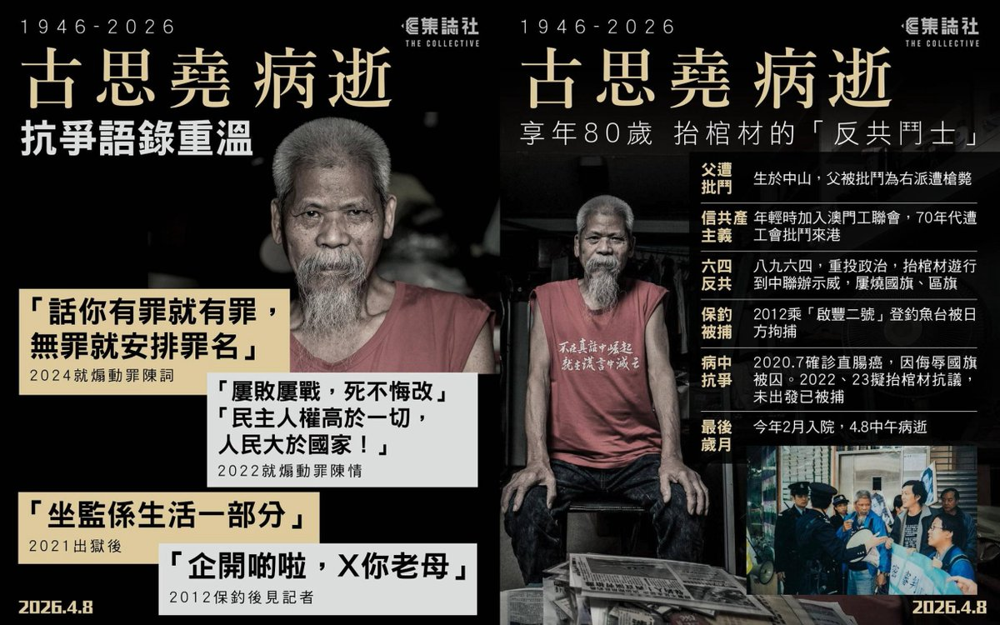

𝐀𝐬𝐡𝐥𝐞𝐲 𝐁𝐥𝐨𝐜𝐤🍥🌹🇹🇼🏳️⚧️🇪🇺
@bolckAshley
一路走好啊，先生🕯️🌹



李老师不是你老师
@whyyoutouzhele
4月8日，港媒报道：香港知名社运人士古思尧本周三因直肠癌病逝，终年80岁。
他自称「爱国反共」，2012年曾成功登上钓鱼台，被央视称为「保钓英雄」。
但因他长期示威抗议中港政府，批评其打压人权，遭中媒以「乱港分子」「劣迹斑斑」等词，报道他的死讯。
古思尧年轻时是共产主义支持者。 https://t.co/ficbVHU7av